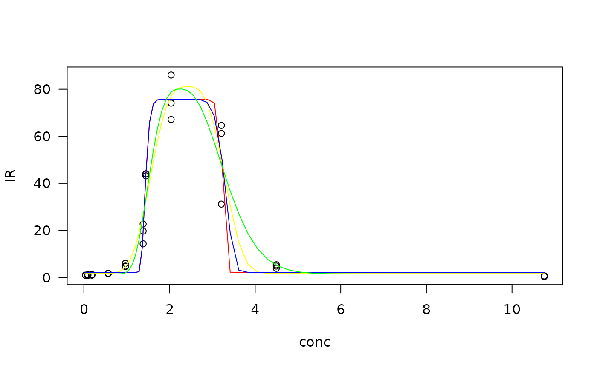
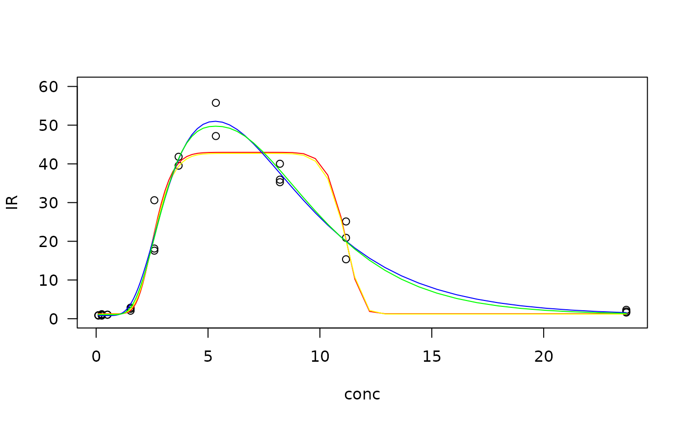
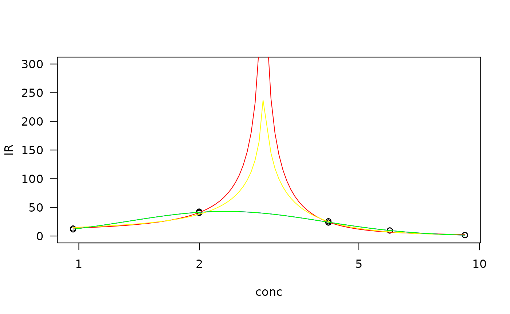

Fitting a biphasic dose-reponse model
Source:vignettes/articles/Advanced_Fitting-a-biphasic-dose-reponse-model.Rmd
Advanced_Fitting-a-biphasic-dose-reponse-model.RmdThis article is to reproduce the biphasic dose responses demonstrated in the Stackoverflow post and in the supplementing material
library(drcHelper)
#> Loading required package: drc
#> Loading required package: MASS
#>
#> 'drc' has been loaded.
#> Please cite R and 'drc' if used for a publication,
#> for references type 'citation()' and 'citation('drc')'.
#>
#> Attaching package: 'drc'
#> The following objects are masked from 'package:stats':
#>
#> gaussian, getInitial
library(drc)Stackoverflow
dat <- structure(list(Concn = c(1e-05, 4e-06, 1.5e-06, 7.5e-07, 2.5e-07,
1e-07, 3.75e-08, 1.63e-08, 6.25e-09, 2.5e-09, 1.06e-09, 4.06e-10,
1.56e-10, 6.25e-11, 2.66e-11, 1.09e-11), CompoundX = c(0.309967,
0.239756, 0.924346, 1.409483, 2.128796, 2.407227, 2.300768, 1.826203,
0.978104, 0.483403, 0.235191, 0.115721, 0.06902, 0.031384, 0.023007,
0.003956), CompoundX.2 = c(0.28848, 0.386004, 0.924336, 1.310479,
2.007222, 2.371517, 2.203162, 1.654133, 1.06907, 0.473238, 0.251971,
0.114867, 0.053681, 0.054416, 0.028945, 0.020866)), class = "data.frame", row.names = c(NA,
-16L))
m0<-drm(CompoundX~log(Concn), data = dat, fct = gaussian())
summary(m0)
#>
#> Model fitted: Gaussian (5 parms)
#>
#> Parameter estimates:
#>
#> Estimate Std. Error t-value p-value
#> b:(Intercept) 2.039632 0.082528 24.7144 5.461e-11 ***
#> c:(Intercept) 0.027623 0.038466 0.7181 0.4877
#> d:(Intercept) 2.437808 0.064117 38.0214 5.036e-13 ***
#> e:(Intercept) -16.270101 0.044150 -368.5165 < 2.2e-16 ***
#> f:(Intercept) 2.152055 0.195211 11.0242 2.767e-07 ***
#> ---
#> Signif. codes: 0 '***' 0.001 '**' 0.01 '*' 0.05 '.' 0.1 ' ' 1
#>
#> Residual standard error:
#>
#> 0.07611998 (11 degrees of freedom)
plot(m0, type = "all", col= "black", log = "")
#> Warning in min(dose[dose > 0]): no non-missing arguments to min; returning Inf## Defining
data(metaldata)
#Make a subset with the Zn data
Zn <- metaldata[metaldata$metal=="Zn",]
Zn
#> metal conc IR
#> 1 Zn 0.0369 0.9142857
#> 2 Zn 0.0369 0.9756098
#> 3 Zn 0.0369 0.8974359
#> 4 Zn 0.0925 0.9523810
#> 5 Zn 0.0925 0.8780488
#> 6 Zn 0.0925 1.1666667
#> 7 Zn 0.1859 0.9523810
#> 8 Zn 0.1859 1.1707317
#> 9 Zn 0.1859 1.2115385
#> 10 Zn 0.5693 1.7523810
#> 11 Zn 0.5693 1.6585366
#> 12 Zn 0.5693 1.7948718
#> 13 Zn 0.9684 5.9809524
#> 14 Zn 0.9684 4.6341463
#> 15 Zn 0.9684 4.8461538
#> 16 Zn 1.3836 14.2857143
#> 17 Zn 1.3836 19.7073171
#> 18 Zn 1.3836 22.7051282
#> 19 Zn 1.4472 43.9500000
#> 20 Zn 1.4472 44.0869565
#> 21 Zn 1.4472 43.2000000
#> 22 Zn 2.0371 67.1238095
#> 23 Zn 2.0371 74.0975610
#> 24 Zn 2.0371 86.0192308
#> 25 Zn 3.2111 31.1619048
#> 26 Zn 3.2111 61.2195122
#> 27 Zn 3.2111 64.6153846
#> 28 Zn 4.4946 3.8857143
#> 29 Zn 4.4946 4.8292683
#> 30 Zn 4.4946 5.3846154
#> 31 Zn 10.7532 0.3428571
#> 32 Zn 10.7532 0.5853659
#> 33 Zn 10.7532 0.6730769
#Fitting biphasic dose-response profiles
#gaussian function
Zn.gau <- drm(IR~conc, data=Zn, fct=gaussian(), na.action=na.omit)
summary(Zn.gau)
#>
#> Model fitted: Gaussian (5 parms)
#>
#> Parameter estimates:
#>
#> Estimate Std. Error t-value p-value
#> b:(Intercept) 0.8861307 0.0093682 94.5893 < 2.2e-16 ***
#> c:(Intercept) 2.1659895 1.2820509 1.6895 0.1022
#> d:(Intercept) 75.7461755 3.3920022 22.3308 < 2.2e-16 ***
#> e:(Intercept) 2.3418279 0.0086316 271.3077 < 2.2e-16 ***
#> f:(Intercept) 13.8801613 2.8981117 4.7894 4.933e-05 ***
#> ---
#> Signif. codes: 0 '***' 0.001 '**' 0.01 '*' 0.05 '.' 0.1 ' ' 1
#>
#> Residual standard error:
#>
#> 5.87511 (28 degrees of freedom)
#Model checking
plot(fitted(Zn.gau), residuals(Zn.gau), ylim = c(-20, 20))
# Gaussian function with Box-Cox transform
Zn.gau2 <- drm(IR~conc, data=Zn, fct=gaussian(), na.action=na.omit, bcVal = 0, bcAdd = 10)
summary(Zn.gau2)
#>
#> Model fitted: Gaussian (5 parms)
#>
#> Parameter estimates:
#>
#> Estimate Std. Error t-value p-value
#> b:(Intercept) 0.793259 0.075520 10.5040 3.215e-11 ***
#> c:(Intercept) 1.613775 0.500908 3.2217 0.003223 **
#> d:(Intercept) 81.080825 10.982113 7.3830 4.859e-08 ***
#> e:(Intercept) 2.422227 0.042576 56.8923 < 2.2e-16 ***
#> f:(Intercept) 3.115795 0.624967 4.9855 2.885e-05 ***
#> ---
#> Signif. codes: 0 '***' 0.001 '**' 0.01 '*' 0.05 '.' 0.1 ' ' 1
#>
#> Residual standard error:
#>
#> 0.17677 (28 degrees of freedom)
#>
#> Non-normality/heterogeneity adjustment through optimal Box-Cox transformation
#>
#> Specified lambda: 0
#Model checking
plot(fitted(Zn.gau2), residuals(Zn.gau2), ylim = c(-0.4, 0.4))
#lgaussian function
Zn.lgau <- drm(IR~conc, data=Zn, fct=lgaussian(), na.action=na.omit)
summary(Zn.lgau)
#>
#> Model fitted: Log-Gaussian (5 parms)
#>
#> Parameter estimates:
#>
#> Estimate Std. Error t-value p-value
#> b:(Intercept) 0.4013399 0.0064603 62.1238 < 2.2e-16 ***
#> c:(Intercept) 2.1660776 1.2820555 1.6895 0.1022
#> d:(Intercept) 75.7466002 3.3919724 22.3311 < 2.2e-16 ***
#> e:(Intercept) 2.1746086 0.0128388 169.3773 < 2.2e-16 ***
#> f:(Intercept) 9.1065547 1.8772570 4.8510 4.168e-05 ***
#> ---
#> Signif. codes: 0 '***' 0.001 '**' 0.01 '*' 0.05 '.' 0.1 ' ' 1
#>
#> Residual standard error:
#>
#> 5.87511 (28 degrees of freedom)
#Model checking
plot(fitted(Zn.lgau), residuals(Zn.lgau), ylim = c(-20, 20))
# lgaussian function with Box-Cox transform
Zn.lgau2 <- drm(IR~conc, data=Zn, fct=lgaussian(), na.action=na.omit, bcVal = 0, bcAdd = 10)
summary(Zn.lgau2)
#>
#> Model fitted: Log-Gaussian (5 parms)
#>
#> Parameter estimates:
#>
#> Estimate Std. Error t-value p-value
#> b:(Intercept) 0.351996 0.048207 7.3018 5.978e-08 ***
#> c:(Intercept) 1.475965 0.597634 2.4697 0.019884 *
#> d:(Intercept) 80.099960 9.894407 8.0955 8.170e-09 ***
#> e:(Intercept) 2.245102 0.043678 51.4011 < 2.2e-16 ***
#> f:(Intercept) 2.662339 0.829132 3.2110 0.003312 **
#> ---
#> Signif. codes: 0 '***' 0.001 '**' 0.01 '*' 0.05 '.' 0.1 ' ' 1
#>
#> Residual standard error:
#>
#> 0.1698429 (28 degrees of freedom)
#>
#> Non-normality/heterogeneity adjustment through optimal Box-Cox transformation
#>
#> Specified lambda: 0
#Model checking
plot(fitted(Zn.lgau2), residuals(Zn.lgau2), ylim = c(-0.4, 0.4))
#plot the models fitted
plot(Zn.gau, type = "obs", col= "black", log = "")
plot(Zn.gau, type = "none", add = TRUE, col = "red")
plot(Zn.gau2, type = "none", add = TRUE, col = "yellow")
plot(Zn.lgau, type = "none", add = TRUE, col = "blue")
plot(Zn.lgau2, type = "none", add = TRUE, col = "green")
#Effective doses (EDp) calculation
ED(Zn.lgau2, 50, interval = "delta")
#>
#> Estimated effective doses
#>
#> Estimate Std. Error Lower Upper
#> e:1:50 3.34241 0.18363 2.96627 3.71855
ED(Zn.lgau2, -50, interval = "delta", bound = FALSE)
#>
#> Estimated effective doses
#>
#> Estimate Std. Error Lower Upper
#> e:1:-50 1.508038 0.082849 1.338329 1.677746
ED(Zn.lgau2, 99.9,interval = "delta")
#>
#> Estimated effective doses
#>
#> Estimate Std. Error Lower Upper
#> e:1:99.9 2.32300 0.10458 2.10877 2.53723
#Make a subset with the Cd data
Cd <- metaldata[metaldata$metal=="Cd",]
Cd
#> metal conc IR
#> 34 Cd 0.1004 0.8761905
#> 35 Cd 0.1004 0.8906250
#> 36 Cd 0.1004 0.8194444
#> 37 Cd 0.2517 0.8000000
#> 38 Cd 0.2517 1.1718750
#> 39 Cd 0.2517 1.0138889
#> 40 Cd 0.5055 1.0285714
#> 41 Cd 0.5055 1.0312500
#> 42 Cd 0.5055 1.0416667
#> 43 Cd 1.5398 2.5523810
#> 44 Cd 1.5398 2.8593750
#> 45 Cd 1.5398 2.0694444
#> 46 Cd 2.6010 18.1333333
#> 47 Cd 2.6010 17.5781250
#> 48 Cd 2.6010 30.6111111
#> 49 Cd 3.6856 39.5428571
#> 50 Cd 3.6856 41.8333333
#> 51 Cd 5.3508 55.7714286
#> 52 Cd 5.3508 47.1944444
#> 53 Cd 8.2131 35.9238095
#> 54 Cd 8.2131 40.0312500
#> 55 Cd 8.2131 35.2638889
#> 56 Cd 11.1672 15.3523810
#> 57 Cd 11.1672 25.1250000
#> 58 Cd 11.1672 20.8888889
#> 59 Cd 23.6932 1.6000000
#> 60 Cd 23.6932 2.2968750
#> 61 Cd 23.6932 1.8750000
#Fitting biphasic dose-response profiles
#gaussian function
Cd.gau <- drm(IR~conc, data=Cd, fct=gaussian(), na.action=na.omit)
summary(Cd.gau)
#>
#> Model fitted: Gaussian (5 parms)
#>
#> Parameter estimates:
#>
#> Estimate Std. Error t-value p-value
#> b:(Intercept) 4.079689 0.115139 35.4326 < 2e-16 ***
#> c:(Intercept) 1.283627 1.275138 1.0067 0.32457
#> d:(Intercept) 42.981885 1.907644 22.5314 < 2e-16 ***
#> e:(Intercept) 6.850150 0.070015 97.8387 < 2e-16 ***
#> f:(Intercept) 7.805005 3.237173 2.4111 0.02429 *
#> ---
#> Signif. codes: 0 '***' 0.001 '**' 0.01 '*' 0.05 '.' 0.1 ' ' 1
#>
#> Residual standard error:
#>
#> 4.4849 (23 degrees of freedom)
#Model checking
plot(fitted(Cd.gau), residuals(Cd.gau), ylim = c(-10, 10))
#Gaussian function with Box-Cox transform
Cd.gau2 <- drm(IR~conc, data=Cd, fct=gaussian(), na.action=na.omit, bcVal = 0, bcAdd = 10)
summary(Cd.gau2)
#>
#> Model fitted: Gaussian (5 parms)
#>
#> Parameter estimates:
#>
#> Estimate Std. Error t-value p-value
#> b:(Intercept) 4.056422 0.090069 45.0368 < 2.2e-16 ***
#> c:(Intercept) 1.202271 0.352358 3.4121 0.002388 **
#> d:(Intercept) 42.700145 2.340528 18.2438 3.551e-15 ***
#> e:(Intercept) 6.851570 0.053432 128.2305 < 2.2e-16 ***
#> f:(Intercept) 7.234677 1.057973 6.8382 5.667e-07 ***
#> ---
#> Signif. codes: 0 '***' 0.001 '**' 0.01 '*' 0.05 '.' 0.1 ' ' 1
#>
#> Residual standard error:
#>
#> 0.1088791 (23 degrees of freedom)
#>
#> Non-normality/heterogeneity adjustment through optimal Box-Cox transformation
#>
#> Specified lambda: 0
#Model checking
plot(fitted(Cd.gau2), residuals(Cd.gau2), ylim = c(-0.2, 0.2))
#lgaussian function
Cd.lgau <- drm(IR~conc, data=Cd, fct=lgaussian(), na.action=na.omit)
summary(Cd.lgau)
#>
#> Model fitted: Log-Gaussian (5 parms)
#>
#> Parameter estimates:
#>
#> Estimate Std. Error t-value p-value
#> b:(Intercept) 0.544683 0.032578 16.7195 2.308e-14 ***
#> c:(Intercept) 0.806563 0.920847 0.8759 0.3901
#> d:(Intercept) 51.009281 2.143174 23.8008 < 2.2e-16 ***
#> e:(Intercept) 5.315768 0.093498 56.8542 < 2.2e-16 ***
#> f:(Intercept) 2.105116 0.261655 8.0454 3.892e-08 ***
#> ---
#> Signif. codes: 0 '***' 0.001 '**' 0.01 '*' 0.05 '.' 0.1 ' ' 1
#>
#> Residual standard error:
#>
#> 3.086809 (23 degrees of freedom)
#Model checking
plot(fitted(Cd.lgau), residuals(Cd.lgau), ylim = c(-6, 6), xlim = c(0, 50))
#lgaussian function with Box-Cox transform
Cd.lgau2 <- drm(IR~conc, data=Cd, fct=lgaussian(), na.action=na.omit, bcVal = 0, bcAdd = 10)
summary(Cd.lgau2)
#>
#> Model fitted: Log-Gaussian (5 parms)
#>
#> Parameter estimates:
#>
#> Estimate Std. Error t-value p-value
#> b:(Intercept) 0.562495 0.039451 14.2581 6.590e-13 ***
#> c:(Intercept) 1.039686 0.314707 3.3037 0.003103 **
#> d:(Intercept) 49.728622 3.290085 15.1147 1.950e-13 ***
#> e:(Intercept) 5.340496 0.093375 57.1938 < 2.2e-16 ***
#> f:(Intercept) 2.358463 0.293418 8.0379 3.955e-08 ***
#> ---
#> Signif. codes: 0 '***' 0.001 '**' 0.01 '*' 0.05 '.' 0.1 ' ' 1
#>
#> Residual standard error:
#>
#> 0.09005292 (23 degrees of freedom)
#>
#> Non-normality/heterogeneity adjustment through optimal Box-Cox transformation
#>
#> Specified lambda: 0
#Model checking
plot(fitted(Cd.lgau2), residuals(Cd.lgau2), ylim = c(-0.3, 0.3))
#plot the models fitted
plot(Cd.gau, type = "obs", col= "black", log = "", ylim = c(0, 60))
plot(Cd.gau, type = "none", add = TRUE, col = "red")
plot(Cd.gau2, type = "none", add = TRUE, col = "yellow")
plot(Cd.lgau, type = "none", add = TRUE, col = "blue")
plot(Cd.lgau2, type = "none", add = TRUE, col = "green")
#Effective doses (D(p)) calculation
ED(Cd.lgau2, -50, interval = "delta", bound = FALSE)
#>
#> Estimated effective doses
#>
#> Estimate Std. Error Lower Upper
#> e:1:-50 2.79902 0.10714 2.57737 3.02066
ED(Cd.lgau2, 99.9,interval = "delta")
#>
#> Estimated effective doses
#>
#> Estimate Std. Error Lower Upper
#> e:1:99.9 5.56039 0.11333 5.32594 5.79483
ED(Cd.lgau2, 50,interval = "delta")
#>
#> Estimated effective doses
#>
#> Estimate Std. Error Lower Upper
#> e:1:50 10.18961 0.39005 9.38273 10.99649
# Make a subset with the ZnCd data
ZnCd <- metaldata[metaldata$metal=="ZnCd",]
ZnCd
#> metal conc IR
#> 326 ZnCd 0.9671179 13.276596
#> 327 ZnCd 0.9671179 11.744681
#> 328 ZnCd 0.9671179 11.404255
#> 329 ZnCd 0.9671179 11.574468
#> 330 ZnCd 1.9969972 42.808511
#> 331 ZnCd 1.9969972 41.744681
#> 332 ZnCd 1.9969972 40.808511
#> 333 ZnCd 1.9969972 40.255319
#> 334 ZnCd 4.1971350 25.914894
#> 335 ZnCd 4.1971350 23.914894
#> 336 ZnCd 4.1971350 23.361702
#> 337 ZnCd 4.1971350 23.489362
#> 338 ZnCd 5.9729887 9.574468
#> 339 ZnCd 5.9729887 9.702128
#> 340 ZnCd 5.9729887 9.914894
#> 341 ZnCd 5.9729887 9.489362
#> 342 ZnCd 9.1994126 1.787234
#> 343 ZnCd 9.1994126 1.361702
#> 344 ZnCd 9.1994126 1.446809
#> 345 ZnCd 9.1994126 1.702128
#gaussian function
ZnCd.gau <- drm(IR~conc, data=ZnCd, fct=gaussian(), na.action=na.omit)
summary(ZnCd.gau)
#> Warning in sqrt(diag(varMat)): NaNs produced
#>
#> Model fitted: Gaussian (5 parms)
#>
#> Parameter estimates:
#>
#> Estimate Std. Error t-value p-value
#> b:(Intercept) 8.3214e-03 NaN NaN NaN
#> c:(Intercept) 2.2642e+00 1.1019e+00 2.0548 0.05774 .
#> d:(Intercept) 1.0820e+03 NaN NaN NaN
#> e:(Intercept) 2.8890e+00 2.3294e-02 124.0227 < 2.2e-16 ***
#> f:(Intercept) 4.0544e-01 1.6222e-02 24.9934 1.222e-13 ***
#> ---
#> Signif. codes: 0 '***' 0.001 '**' 0.01 '*' 0.05 '.' 0.1 ' ' 1
#>
#> Residual standard error:
#>
#> 2.120518 (15 degrees of freedom)
#Model checking
plot(fitted(ZnCd.gau), residuals(ZnCd.gau))
#> Warning in sqrt(diag(varMat)): NaNs produced
#> Warning in sqrt(diag(varMat)): NaNs produced
#Gaussian function with Box-Cox transform
ZnCd.gau2 <- drm(IR~conc, data=ZnCd, fct=gaussian(), na.action=na.omit, bcVal = 0, bcAdd = 10)
summary(ZnCd.gau2)
#>
#> Model fitted: Gaussian (5 parms)
#>
#> Parameter estimates:
#>
#> Estimate Std. Error t-value p-value
#> b:(Intercept) 0.040953 0.033257 1.2314 0.23712
#> c:(Intercept) 0.579361 1.245712 0.4651 0.64855
#> d:(Intercept) 329.177040 137.561825 2.3929 0.03024 *
#> e:(Intercept) 2.899653 0.048979 59.2017 < 2.2e-16 ***
#> f:(Intercept) 0.475406 0.075453 6.3007 1.422e-05 ***
#> ---
#> Signif. codes: 0 '***' 0.001 '**' 0.01 '*' 0.05 '.' 0.1 ' ' 1
#>
#> Residual standard error:
#>
#> 0.1078937 (15 degrees of freedom)
#>
#> Non-normality/heterogeneity adjustment through optimal Box-Cox transformation
#>
#> Specified lambda: 0
#Model checking
plot(fitted(ZnCd.gau2), residuals(ZnCd.gau2), ylim = c(-0.15, 0.15))
#lgaussian function
ZnCd.lgau <- drm(IR~conc, data=ZnCd, fct=lgaussian(), na.action=na.omit)
summary(ZnCd.lgau)
#>
#> Model fitted: Log-Gaussian (5 parms)
#>
#> Parameter estimates:
#>
#> Estimate Std. Error t-value p-value
#> b:(Intercept) 0.555663 0.015419 36.0386 4.972e-16 ***
#> c:(Intercept) -0.274800 1.032831 -0.2661 0.7938
#> d:(Intercept) 42.904780 0.747360 57.4084 < 2.2e-16 ***
#> e:(Intercept) 2.321479 0.018413 126.0780 < 2.2e-16 ***
#> f:(Intercept) 2.028462 0.164444 12.3353 2.963e-09 ***
#> ---
#> Signif. codes: 0 '***' 0.001 '**' 0.01 '*' 0.05 '.' 0.1 ' ' 1
#>
#> Residual standard error:
#>
#> 0.834502 (15 degrees of freedom)
#Model checking
plot(fitted(ZnCd.lgau), residuals(ZnCd.lgau), ylim = c(-2, 2))
#lgaussian function with Box-Cox transform
ZnCd.lgau2 <- drm(IR~conc, data=ZnCd, fct=lgaussian(), na.action=na.omit, bcVal = 0, bcAdd = 10)
summary(ZnCd.lgau2)
#>
#> Model fitted: Log-Gaussian (5 parms)
#>
#> Parameter estimates:
#>
#> Estimate Std. Error t-value p-value
#> b:(Intercept) 0.555188 0.015215 36.4897 4.508e-16 ***
#> c:(Intercept) -0.290451 0.583670 -0.4976 0.626
#> d:(Intercept) 42.910857 0.943991 45.4568 < 2.2e-16 ***
#> e:(Intercept) 2.321820 0.012425 186.8676 < 2.2e-16 ***
#> f:(Intercept) 2.024344 0.134982 14.9971 1.947e-10 ***
#> ---
#> Signif. codes: 0 '***' 0.001 '**' 0.01 '*' 0.05 '.' 0.1 ' ' 1
#>
#> Residual standard error:
#>
#> 0.02654068 (15 degrees of freedom)
#>
#> Non-normality/heterogeneity adjustment through optimal Box-Cox transformation
#>
#> Specified lambda: 0
#Model checking
plot(fitted(ZnCd.lgau2), residuals(ZnCd.lgau2), ylim = c(-0.06, 0.06))
#plot the models fitted
plot(ZnCd.gau, type = "obs", col= "black", ylim = c(0, 300))
plot(ZnCd.gau, type = "none", add = TRUE, col = "red")
plot(ZnCd.gau2, type = "none", add = TRUE, col = "yellow")
plot(ZnCd.lgau, type = "none", add = TRUE, col = "blue")
plot(ZnCd.lgau2, type = "none", add = TRUE, col = "green")
#Effective doses (D(p)) calculation
ED(ZnCd.lgau2, -50, interval = "delta", bound = FALSE)
#>
#> Estimated effective doses
#>
#> Estimate Std. Error Lower Upper
#> e:1:-50 1.209189 0.014632 1.178001 1.240377
ED(ZnCd.lgau2, 99.9,interval = "delta")
#>
#> Estimated effective doses
#>
#> Estimate Std. Error Lower Upper
#> e:1:99.9 2.382456 0.015367 2.349703 2.415210
ED(ZnCd.lgau2, 50,interval = "delta")
#>
#> Estimated effective doses
#>
#> Estimate Std. Error Lower Upper
#> e:1:50 4.458236 0.053948 4.343248 4.573224
# Additivity predictions and departures from additivity
indicesFct(0.355,list(ZnCd.lgau2, Zn.lgau2, Cd.lgau2), c(-0.2, -0.5, -1, -2, -5, -10, -20, -30, -40, -50, -60, -70, -80, -90, -99, 99, 80, 70, 60, 50, 40, 30, 20, 10, 5, 2, 1, 0.5, 0.2))
#plot CIx
plotFACI(0.355,list(ZnCd.lgau2, Zn.lgau2, Cd.lgau2), "x", ylim = c(-0.2, 2.2), faValues = c(-10, -20, -30, -40, -50, -60, -70, -80, -90, -99, 99, 90, 80, 70, 60, 50, 40, 30, 20, 10), showPoints = TRUE)
title("Combination index for x axis")
#plot CIy
plotFACI(0.355,list(ZnCd.lgau2, Zn.lgau2, Cd.lgau2), "y", ylim = c(-0.2, 2.2), faValues = c(-10, -20, -30, -40, -50, -60, -70, -80, -90, -99, 99, 90, 80, 70, 60, 50, 40, 30, 20, 10), showPoints = TRUE)
title("Combination index for y axis")References
- Martin-Betancor K, Ritz C, Fernández-Piñas F, Leganés F, Rodea-Palomares I. Defining an additivity framework for mixture research in inducible whole-cell biosensors. Sci Rep. 2015 Nov 26;5:17200. doi: 10.1038/srep17200. PMID: 26606975; PMCID: PMC4660423.
- https://stackoverflow.com/questions/72472432/how-to-fit-a-biphasic-dose-response-curve-using-r